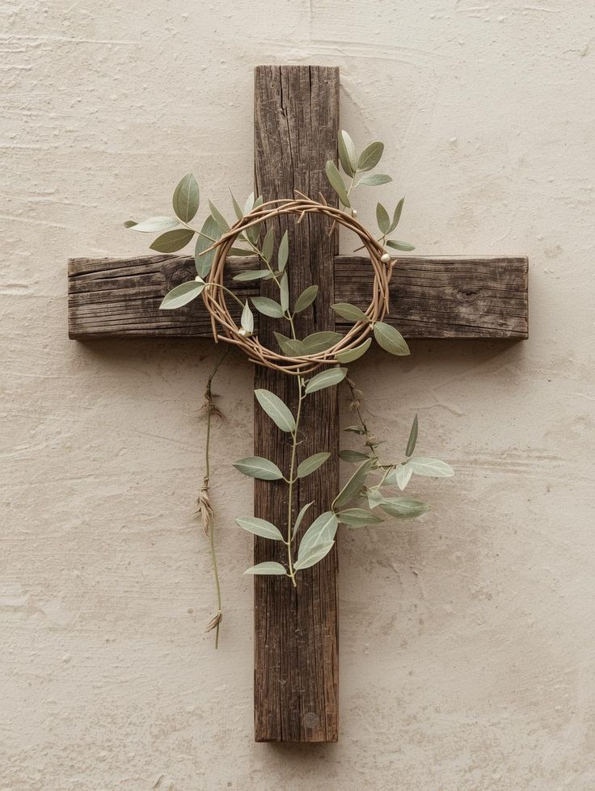

Knowing about Jesus matters because He speaks to the deepest needs of the human heart.
Jesus shows us who God is—not distant or harsh, but loving, compassionate, and near. Through His life, we see mercy for the broken, hope for the weary, and forgiveness that truly restores.
He teaches us how to live—to love others, forgive freely, serve humbly, and walk in truth even when it’s difficult.
Most of all, Jesus offers purpose and hope. In Him, people find peace that circumstances can’t take away, strength to face life’s struggles, and the promise of new life—now and forever.
To know Jesus is not just to learn about a historical figure, but to encounter a relationship that transforms the heart and gives life meaning.
Welcome To Bethesda Bethel AG Church
Welcome to Bethesda Bethel AG Church. We are a community dedicated to worship,
service, and fellowship in Christ.
A church is more than a building—it is a family of faith.
It is a place where people come together to worship God, grow in His Word, and support one another through prayer, love, and service. In the church, hearts are encouraged, lives are transformed, and hope is renewed.
The church exists to share God’s love, serve the community, and guide people toward a deeper relationship with Jesus Christ. It is a home where everyone is welcomed, valued, and strengthened in faith.
Sunday Service
9:00 AM – Kannada/Malayalam
🕕 6:00 PM – Evening Prayer